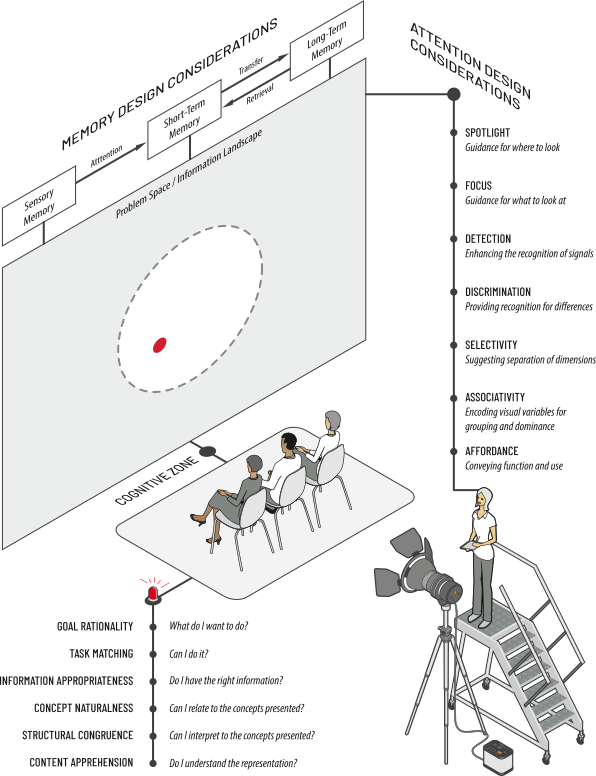

VIEWS
Nocturne, of Chopin, so beautiful music.
But few people will appreciate the music if I just show them the notes.
Most of us need to listen to the music to understand how beautiful it is.
But often that’s how we present statistics;
we just show the notes we don’t play the music.
— Hans Roslings
Are you paying attention to this text? Do the illustrations keep your attention and enable you to focus on understanding the content? Herb Simon (Nobel Prize Winner) as quoted by Hal Varian in Scientifi c American 9/1995 wrote this of attention:
What information consumes is rather obvious: it consumes the attention of its recipients. Hence a wealth of information creates a poverty of attention, and a need to allocate that attention efficiently among the overabundance of information sources that might consume it.
To understand the needs for effi ciently managing attention, we must fi rst look at how it works. I refer to these aspects as spotlight and focus. Attention to items in the visual scene has been likened to a spotlight that highlights a small area making it more visible than its surroundings. This spotlight can be directed away from our fixations to objects or events in peripheral vision.
A key aspect of the way attention works is that initial views, if they take in large segments of a scene, will be able to process only gross features. This processing will then guide the narrowing of attention to particular features and objects in order to examine details. Therefore in visualization, graphic design impacts upon the initial wide-scope global view and may dictate what specifi c details are seen. Scene structure will weigh heavily in infl uencing the attention of your consumers.
My best friend in medical school was a magician. And we were shown an X-ray of a sword-swallower, and I tried it and failed.
Then I got a sword-swallower as a patient, and he taught me.
— Hans Rosling
Hans Rosling image
Visual attention may begin with a broad extent but relatively coarse resolution, and then, based on cues obtained from this initial perspective, be directed to another location or focus in a particular area or subject. In examining a scene, one role of visual attention is to determine where to look. It is up to you to provide this guidance in your design.
Once the spotlight fi xes to certain focus areas, the focus of attention relates to detection and discrimination of visual variables. Detection is when the viewer must discriminate between some signal and the background on which that signal appears. Discrimination is noticing the diff erence between two perceptual units rather than between one unit and its background. In the words of a master, When both eyes direct the pyramid of sight to an object, that object becomes clearly seen and comprehended by the eyes. (Da Vinci)
Considering how we attend and the concepts of spotlight and focus, these factors relate to the basis for what we attend to.
What we attend to
In this case there are three primary factors known as selectivity, associativity, and affordance. Selectivity refers to the focused attention and separability of certain visual dimensions. Selective attention is the ability to attend to one dimension of a display and ignore another. If dimensions or variables can be segregated this way, they are not grouped. Gestalt applied, for example by similarity and proximity acting together
to enhance grouping. Bertin’s principle of selectivity suggests that objects can be formed into groups by employing selective variables such as location, size, color, texture and orientation. Selective attention relates to Bertin’s ideas about “selectivity” of graph variables.
If selective attention of parts failed, implying they were grouped, viewers should fi nd it easier to attend to the groups as a unit. Visual variables may hold attributes which are considered integral or separable. Integral combinations should be useful in univariate applications where the goal is to enhance discrimination while reinforcing the appearance of order for quantitative information. Multivariate symbols with separable dimensions, on the other hand, seem suited to the depiction of multivariate data in which the viewer will want to extract various components of data separately.
Associativity exists for a visual variable if variations within that variable can be ignored, allowing the units using that visual variable to form a perceptual group. In this case, certain variables are considered indispensable attributes, as attributes having a dominant perceptual status. It is argued that attention is more selective to indispensable variables than to other visual variables.
Aff ordance refers to a situation where an object’s characteristics intuitively imply its functionality and use. Military commanders have always loved maps. Jake speculated that this wasn’t just because maps convey information clearly, but they also convey possibilities for action. A bridge almost begs to be crossed, for example. Jake then showed a slide of various visualizations of the current fi nancial meltdown. All of these charts showed how bad things are, but none held any hint of what to do next. (Alas!) Is there a way we can create visualizations with map-like “aff ordances for action?”
Our internal information-processing system consists of three main memory structures: sensory, short-term, and long-term. The input to the system is raw sensory data that registers in sensory memory. A small portion of this data passes on to working memory-the equivalent of awareness. Working memory serves as the workspace where with focus of attention and imagry is processed.
There are two constraints, however, as working memory is a limited resource in capacity and retention. Research suggests that working memory has a maximum capacity of (seven plus or minus three) “chunks” of information at a given time. The term chunk refers to a unit of information in short-term memory. In addition to the imitations of capacity, the retention of information decays rapidly.
Long-term memory - In his classic work À la recherche du temps perdu (Rememberance of Things Past), author Marcel Proust writes of a situation where the taste of a cake soaked cup of tea revives memories of his childhood. His work is widely known for its notion of involuntary memory demonstrating how sensory experiences are triggered by sights, sounds, smells and so on. With proper cues, we can retrieve information stored in long-term memory. Why is this important? Because with proper design, both attention and memory can be managed for maximum impact.
…cognitive research has provided sophisticated knowledge about how and why humans process visual information. Surprisingly, this knowledge has rarely found its way into information design research. The brain is treated somewhat like a black box. Still, the focus is on fi nding out which information design works best. Fundamental basic research on why a design may be more eff ective than others and on how users extract knowledge from graphic information has received considerably less attention.
A “cognitively inspired design methodology” Sensory signaling specifi es a design methodology which follows cognitive design principles. The relevant information within this methodology is displayed with a set of visual variables that must match with visual cues known to trigger neural response in brain areas along the where and what paths. A basic challenge within this concept is to transfer knowledge and test-methods from psychology to information visualization in a meaningful way.
HCM, we start with the idea of the user being in, falling out of and regaining the cognitive zone (hereafter, referred to as the CZ). distinguish operations that keep the user in the CZ from those that are disruptive. In order to minimize the load or strain on working memory it is desirable to reduce the amount of processing required. For example, it is often desirable to provide additional temporary storage by creating memory aids which store knowledge in the world or which allow the user to store knowledge in the world rather than in the head. Memory fades over time and one may not be able to correctly remember all the details of an
experience. However, recognition of familiar material is generally easier than the recall. Thus the environment should provide appropriate retrieval cues and encourage regular use of information. A first step in developing principles for visual representations is to understand how they enable cognition [Card, 1999; Norman, 1993]. Some basic principles for developing eff ective depictions include the following (adapted from [Norman, 1993]) in his work Things that make us smart: defending human attributes in the age of the machine (page 70 Illuminating the Path) appropriateness, naturalness and matching.
Capture the important, critical features Are appropriate for the reader Are appropriate for the task (Norman, 52)

The Appropriateness Principle – The visual representation should provide neither more nor less information than that needed for the task at hand.
Note that there is no “correct” way to display any particular relationship, but there are defi nitely incorrect ways. Remember that a representation should support both organization and search and that what is most appropriate depends upon the task to be done. (97)
With too weak a prepresentational format, the processing diffi culty is increased reducing the ability of representation to exploit the power of human perceptual processing. (100) The Naturalness Principle – Experiential cognition is most eff ective when the properties of the visual representation most closely match the information being represented. (72). The power of cognitive artifacts derives from the power of representation. The form of representation most appropriate for an artifact depends on the task to be performed. The same information may need to be represented diff erently for diff erent tasks. With the appropriate choice of representation, hard tasks become easy. (Norman, 75)
The benefi ts of graphics are apparent from their ubiquity and in their naturalness. By naturalness, we mean a convergence of inventions across cultures and ages for using space to represent space and to represent abstract concepts that suggest cognitive correspondences between mental spaces and real ones. (Tversky, 249) The Matching Principle – Representations of information are most eff ective when they match the task to be performed by the user. Norman descibes the two major tasks as fi nding the relevant information and computing the desired conclusion. (60)
Another prominent cognitive scientist has suggested the following two basic principles[Tversky et al., 2002]: Animation: can it facilitate?
The Congruence Principle – The structure and content of a visualization should correspond to the structure and content of the desired mental representation.
The Apprehension Principle - The structure and content of a visualization should be readily and accurately perceived and comprehended.
information visualization is the use of computer supported, interactive visual representations of abstract data to amplify cognition.
Unifi ed Theory of Cognition (Newel)
To be intelligent is to be able to do certain things, to wit, to exploit (encoded) knowledge to attain whatever (encoded) goals the organism has at the moment. (158, Newel) How can we express the diff erent kinds of knowledge the representation must have so that it acts in a goal oriented way? The answer is: by representing the knowledge in terms of goals, states, and operators and guiding the choice of which operator to apply by the principle of rationality.
The Rationality Principle relates to “if an agent has knowledge that an operator application will lead to one of its goals then the agent will select that operator” Problem space, information space, initial state, goal state. these features and values would be part of any state intended to represent that part of the situation.
In our examples so far we have been using features, values, and states to represent things in the observable situation. to moving along a path that leads from the initial state to a goal state via operators